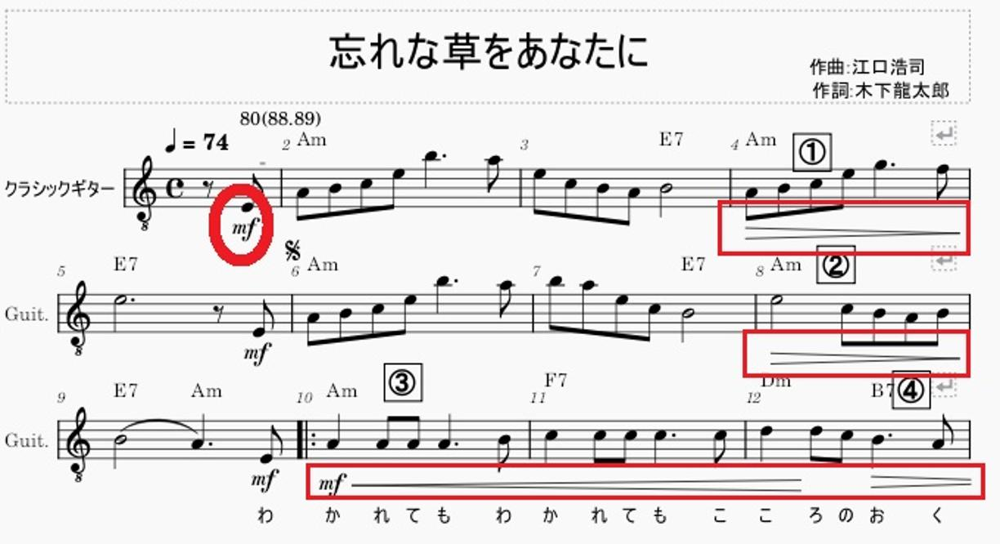
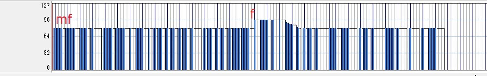
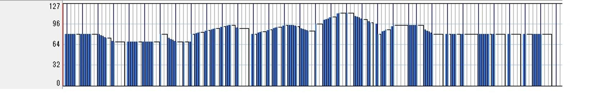

うるがいの話 ある日
最新: 強弱記号【うるがいの話 ある日】とは 一日だけのプログです
『うるがいの話』の最新一日だけのプログで、通信料が少なく経済的だ。カニの画像をクリックすると全ての日付が載る『うるがいの話』サイトを表示します
|
|
【うるがいの話】 うるがい(ｳﾙｶﾞｲ urugai)とは、『もずくがに』の名前でとても大きくなります。 |
|---|---|
|
|
【カミマヤーの話】 猫のことを方言でマヤーといいます。カミマヤー（kamimayaa）とは、神の猫のことです。 |
|
【たながぁの音楽】 たながぁ（ﾀﾅｶﾞｰ tanagaa）とは手長えびのことで、何種類かあり大きいのは車 エビぐらいになります。 |

|
【ぶながぁの話】 ぶながぁ(ﾌﾞﾅｶﾞｰ bunagaa)とは、赤い髪の毛、赤い身体、そして身長は１ｍ２０ｃｍ ぐらい、川の蟹を食べているの目撃された。場所は沖縄県国頭郡大宜味村のと ある村僕の隣近所に住んでいる爺さんから、聞いた話です。 |
|
|
【ギーマの話】 ギーマ(giima)とは、山原の里山に咲くスズランに似た、 花を付けます。実は食べられます、 気が付くと口の周りが紫になっています。 |
2026年10月12日 (月）強弱記号
17:45
【久石 譲音楽する日乗】小学館 より引用－－－
その中で強弱を伝える記号には二つの側面がある。一つは物理
的な意味での音量として、もう一つは心情的な意味での記号だ。
例えばｐは、物理的には弱く演奏するのだが、別の側面はｆで
はなく、ということでもある。つまりｆと書くと音量的な強さ
だけでなく力強く演奏される危険があり、あくまで優しく包み
込むようなメロディーを歌う場合はｐあるいはｍｐ（メゾピア
ノ）、ｍｆ（メゾフォルテ）、ｍｅｎｏｆ（メノ・フォルテ＝
それほど強くなく）など作曲家によって様々な表現を用いる。
ドビュッシーの場合は、あのアンニュイな表現のためｐ、ｐｐ
（ピアニッシモ）などが多用されている。だからそのまま物理
的に演奏したらまったく他の音に消されて聞こえない場合も多
い。
その点チャイコフスキーは、かなり物理的な記号として書いて
いる。《悲愴》の冒頭は６小節のテーマを２回ファゴットが演
奏するのだが（それをコントラバスと後半でヴィオラが支える
というかなり大胆なオーケストレーションで素晴らしい）、１
フレーズずつｐ、ｍｐ、ｓｆ（スフォルツァンド＝特に強く）
、ｐと書いた上にそれぞれクレッシェンド、デクレッシェンド
がついている。要は６小節にわたり、波のようにうねりながら
段々盛り上がり、最後には自問するかのように小さくなるとい
うことなのだが、かなりしつこい。
引用が長くなってしまったが、そうなんですよ。楽譜には強弱
記号がるのです

下は、強弱記号の対応が直線的になっている様子。

暇人は、一か月ほどかけてプログラム作成、波打つようにした。

ただ、凡人なので演奏した時の違いは余り分かりません。マ、
いいか。